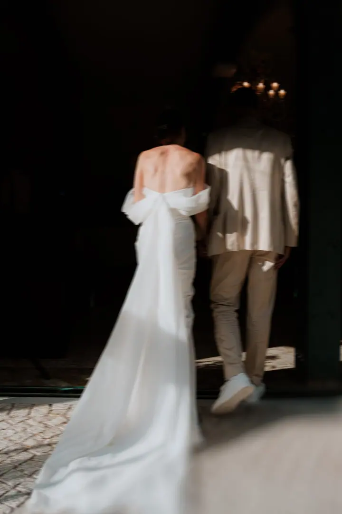
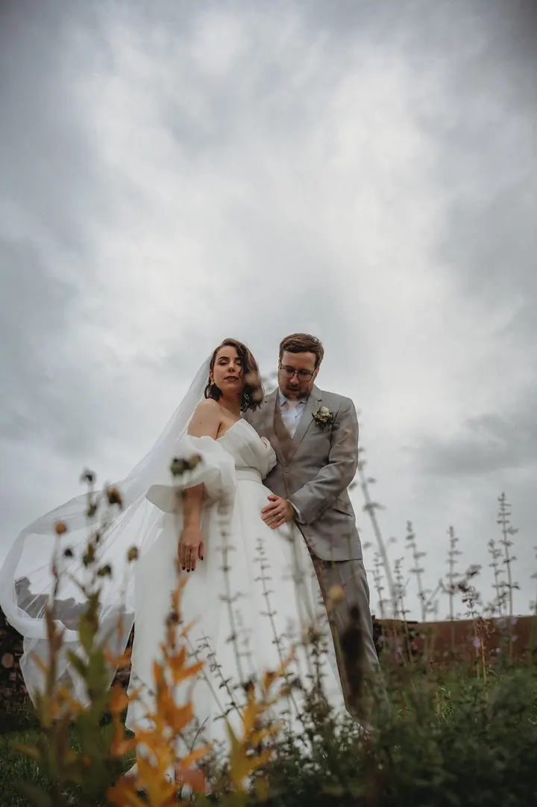
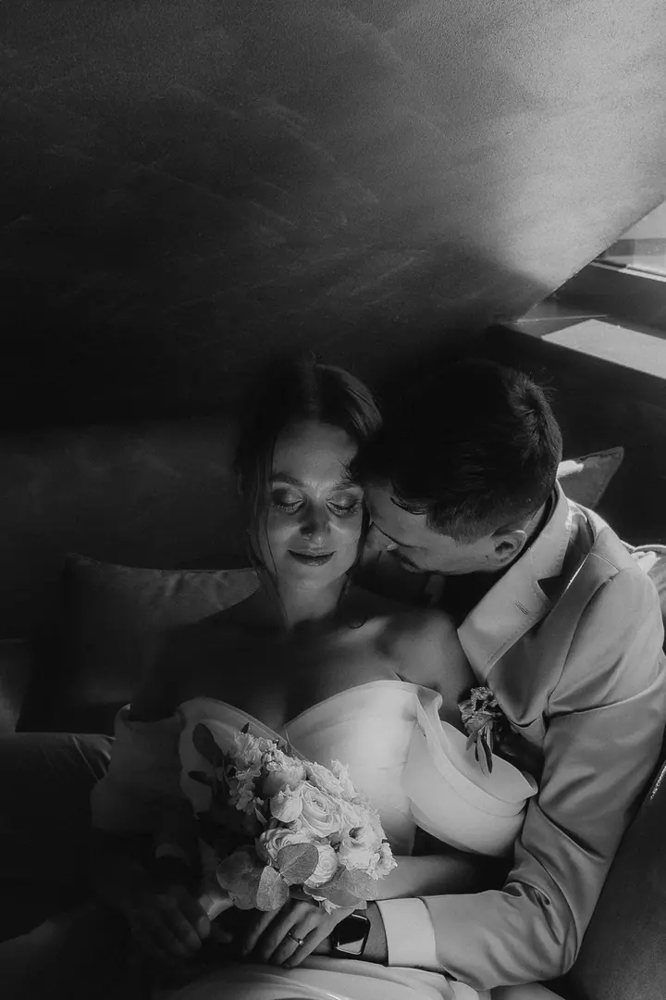
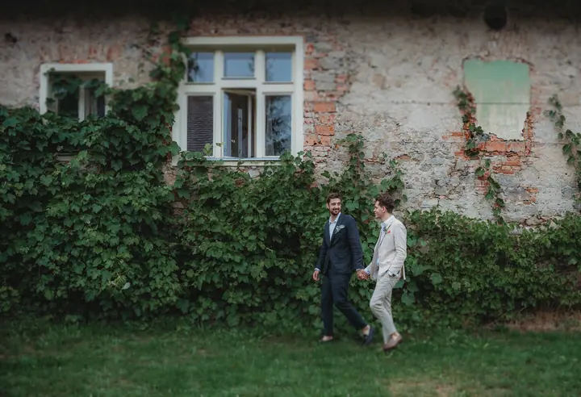

Svatební focení
Fotím svatby od krátkých intimních obřadů až po celodenní veselí. Celý den budu jen pro vás jako tichý pozorovatel, pomocná ruka i kamarádka.

Jmenuji se Jarmila Nosková a jsem svatební a rodinná fotografka z Prahy. Fotím dokumentárně a s uměleckým nádechem, hledám atmosféru, světlo a přírodu. Na svatby za vámi…
Rezervovat termínJsem rodinná a svatební fotografka z Prahy, pod značkou Millie's Photography fotím v Praze i v Brně. Jsem také máma Amélie a Mikuláše, takže vím, jak rychle se z obyčejných chvil stávají vzpomínky.


Fotím s citem a porozuměním. Chci zachytit vaši osobnost, emoce, objetí a gesta, ale i drobné detaily, které snadno uniknou, a přitom jsou tak důležité. Nebudu vás stavět do umělých póz. Budeme si povídat, procházet se a vy budete prostě sami sebou.
Miluju dálky, vůni lesa a bouřky. Moře, conversky a všechno vintage, dobrou kávu a víno, jízdu vlakem a dlouhé večery s filmem. Mám ráda podzim a suché kvítí. Jsem snílek a občas trochu melancholik, a to se do mých fotek asi taky trochu propíše.
Co fotím
Fotím svatby od krátkých intimních obřadů až po celodenní veselí. Celý den budu jen pro vás jako tichý pozorovatel, pomocná ruka i kamarádka.
Žádné strojené úsměvy ani umělé pózy. Půjdeme na procházku, budeme si povídat nebo si hrát s dětmi, venku nebo klidně u vás doma.
Uvolněné focení ve dvou, při kterém nemusíte pózovat. Místo vybereme spolu podle toho, kde se cítíte nejlépe, ať je to divoká příroda, město nebo kavárna.
Jemné a nenucené fotky na památku čekání na miminko. Ráda vám poradím s oblečením i s místem, kde se budete cítit dobře.
Postup
Ve formuláři mi prozraďte datum a místo svatby, něco o vás a jakou svatbu chystáte. Ozvu se vám co nejdříve a sestavíme nabídku přímo na míru.
Před svatbou se rádi potkáme, poznáme se a naladíme na stejnou vlnu. Je to dobrá příležitost se před objektivem uvolnit.
Budu tu celý den jen pro vás. Zachytím vše od důležitých momentů po nepatrné detaily, v klidu i chaosu, smíchu i slzách.
Hotové fotky dostanete v online galerii. Takové, které budou nadčasové a budou hlavně o vás.
Otázky
Svatební investice začíná na 15 000 Kč. Každá svatba je jiná, proto cenu skládám na míru podle počtu hodin a vašich představ.
Ano. Fotím hlavně v Praze a v Brně, ale na svatby za vámi ráda dojedu kamkoli.
Focení trvá většinou 1 až 2,5 hodiny a probíhá formou procházky, přirozeně a nenuceně. Fotky se snažím odevzdat do 1 až 2 týdnů a vybírat budete z hotových náhledů v online galerii. Balíčky začínají na 4 500 Kč za 15 fotografií.
Určitě. Před focením vám pošlu malého průvodce, kde doporučím, jaké oblečení volit a čemu se vyhnout. Hlavní je, abyste se cítili pohodlně a byli to vy.
